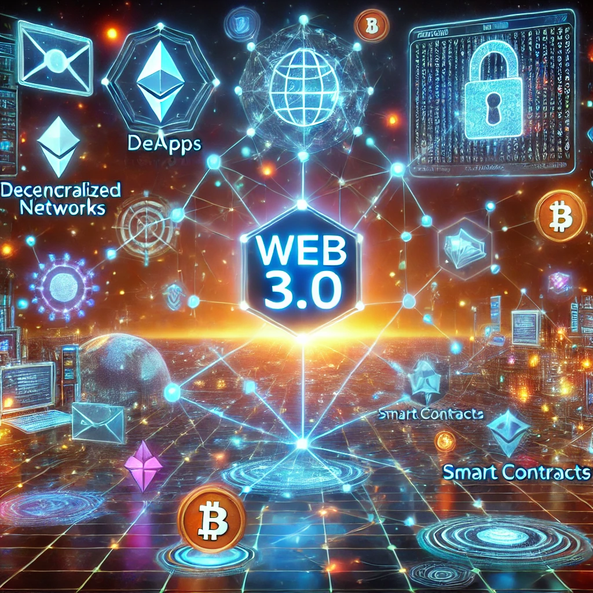

Web 3.0 Explained: Definition, Applications, and Impact (2024 Update)

The internet is undergoing a transformative shift that promises to redefine how we interact with digital spaces. Web 3.0, also known as the decentralized web, represents the next major evolution in internet technology. Powered by blockchain, this iteration aims to return control of data and content back to the users, reducing reliance on large tech corporations. In this comprehensive guide, we'll break down what Web 3.0 is, explore real-world applications and case studies, and analyze both its promise and challenges.
What is Web 3.0?
Web 3.0 is the third stage in the evolution of the internet. To understand its significance, let's look at the previous stages:
- Web 1.0 (The Static Web): The early version of the internet, characterized by static pages and a focus on information consumption. Users could view content, but interactions were limited.
- Web 2.0 (The Social Web): Today's internet, defined by user-generated content and interaction. Social media platforms like Facebook, YouTube, and Twitter dominate, and large corporations manage vast amounts of user data. However, this era has also been marked by concerns over data privacy, surveillance, and corporate control over content.
- Web 3.0 (The Decentralized Web): This new iteration envisions a decentralized internet where users control their data and content directly. Blockchain plays a central role by enabling trustless transactions and decentralized applications (dApps), which operate without intermediaries.
How Does Blockchain Power Web 3.0?
At the core of Web 3.0 is blockchain technology, a decentralized, immutable ledger that records transactions across multiple computers in a way that makes it difficult to alter. This distributed system ensures transparency, security, and autonomy.
- Decentralization: Blockchain allows for decentralized networks where no single entity has control. In Web 3.0, users can own and control their data, digital assets, and online interactions without relying on intermediaries like Google or Facebook.
- Smart Contracts: Blockchain enables smart contracts—self-executing contracts with the terms of the agreement directly written into code. These are fundamental to decentralized finance (DeFi), NFT-based games, and many other Web 3.0 applications.
However, blockchain comes with challenges:
- Scalability: Traditional blockchains (like Bitcoin) struggle to process large volumes of transactions quickly. Solutions like layer 2 scaling and sharding aim to solve this problem.
- Energy Consumption: Proof-of-Work (PoW) is highly energy-intensive. Proof-of-Stake (PoS), which uses validators rather than miners, significantly reduces energy consumption.
Real-World Examples of Web 3.0 in Action
Web 3.0 is already being implemented across various industries. Here are some examples:
- Decentralized Finance (DeFi): Platforms like Uniswap and Aave enable users to lend, borrow, and trade cryptocurrencies without relying on traditional financial intermediaries.
- NFT-Based Games: Games like Axie Infinity allow players to own in-game assets as non-fungible tokens (NFTs), giving gamers real ownership over digital goods.
- Content Creators and Blockchain: Platforms like Mirror allow writers and creators to tokenize and sell their content directly to audiences, bypassing traditional ad-driven models.
"Decentralized video sharing is not just a technological advancement; it's a fundamental shift in how we value and interact with digital content."
The Promises and Challenges of Web 3.0
Promises
- User Autonomy: One of the core promises of Web 3.0 is returning control to users. You own your content, identity, and data.
- Direct Monetization: Web 3.0 enables creators to interact directly with their audiences, avoiding intermediaries like YouTube or Facebook.
- Improved Privacy: Web 3.0 aims to protect user privacy by removing centralized entities that track and sell user data.
Challenges
- Security Risks: Users bear responsibility for their data and security. While blockchain is inherently secure, vulnerabilities in smart contracts or user wallets can lead to hacking.
- Privacy Paradox: While Web 3.0 promises privacy, blockchain's transparency can make it challenging to maintain full anonymity.
- Content Moderation: Without centralized authorities, content moderation becomes a major challenge. Harmful or illegal content could become widespread in decentralized ecosystems.
Mitigating Risks
To mitigate some of these risks, users and platforms can adopt enhanced security practices, such as hardware wallets and multi-factor authentication, and implement cryptographic methods like zero-knowledge proofs for selective transparency.
Environmental Impact and Sustainability
One of the most criticized aspects of blockchain technology has been its environmental impact, particularly in Proof-of-Work (PoW) systems. However, the shift to Proof-of-Stake (PoS) represents a significant improvement in energy efficiency.
- Proof-of-Stake (PoS): PoS drastically reduces the energy required to maintain blockchain networks compared to PoW. Ethereum's recent transition to PoS reduced its carbon footprint by 99.95%.
- Layer 2 Solutions: Projects like Polygon operate on top of Ethereum, processing transactions more efficiently with lower energy costs.
How to Leverage Web 3.0: Insights for Different Users
Gamers: Web 3.0 gaming allows players to own in-game assets through NFTs and trade them on secondary markets. Games like Decentraland and The Sandbox are examples of virtual worlds where users can own land and trade in-game assets.
Content Creators: Artists, musicians, and writers can tokenize their work and sell it as NFTs, allowing them to retain greater control and a larger share of the profits.
Businesses: Companies can use blockchain for supply chain transparency and explore decentralized finance options to streamline transactions and reduce fees.
Regulatory and Legal Implications
A decentralized internet poses challenges for governments and regulators. Governments are exploring frameworks for crypto regulations and NFT taxation, but the decentralized nature of Web 3.0 complicates traditional regulatory enforcement.
Web 3.0 vs. Web 2.0: A Clearer Contrast
- User Control: In Web 2.0, large corporations manage and monetize user data, with little input from the user. Web 3.0 shifts control back to individuals.
- Centralization vs. Decentralization: Web 2.0 is dominated by a few tech giants, while Web 3.0 operates on decentralized networks powered by blockchain.
- Monetization: Web 2.0 relies heavily on advertising revenue, often compromising user privacy. Web 3.0 enables direct monetization through decentralized channels like NFTs and smart contracts.
Conclusion
Web 3.0 is set to transform how we interact with the internet by empowering users with greater control, privacy, and ownership over their digital lives. While the promise of decentralization is exciting, it also presents challenges like scalability, security risks, environmental impact, and regulatory hurdles. However, by embracing blockchain, smart contracts, and NFTs, individuals and businesses can position themselves to thrive in this new era of the internet.